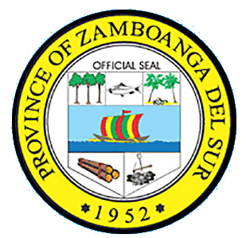
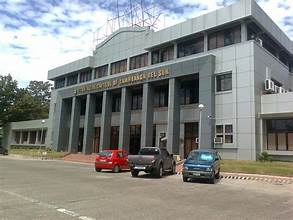
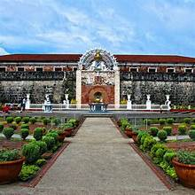
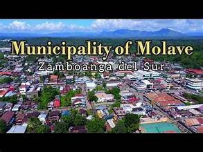
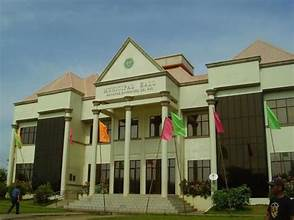
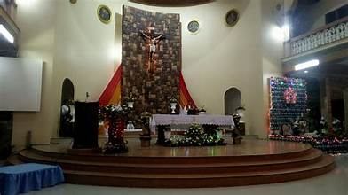
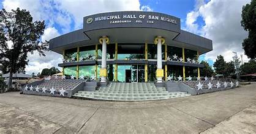

Zamboanga del Sur is composed of 26 municipalities, each with its own distinct character, resources, and communities. Together with Pagadian City, they form the administrative and geographic fabric of the province.
One of the larger municipalities, Labangan is an agricultural hub known for rice and corn production. It is located along a major road corridor and serves as a transit point for goods moving across the province.
Molave is a bustling municipality and a significant commercial center in the interior of the province. It is known for its markets and is a key stop along the highway connecting Pagadian to the rest of Mindanao.
Located in the interior highlands, Tambulig is known for its scenic landscapes and is near the foothills of the Zamboanga mountain range. The municipality has a strong agricultural base and indigenous communities.
Municipalities such as Tukuran, Dinas, and Dumalinao line the coast of Illana Bay, supporting active fishing industries and coastal tourism. These areas are known for their seafood and scenic waterfront communities.
Each municipality is governed by a mayor, vice mayor, and council. Local government units are responsible for delivering basic services, maintaining infrastructure, and managing local resources in coordination with provincial authorities.


